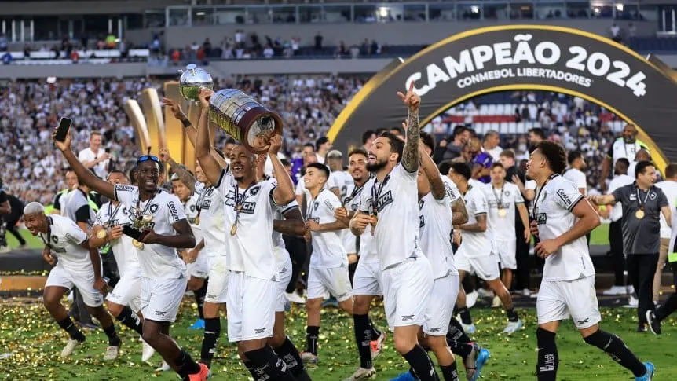

Botafogo venció a Atlético Mineiro y se consagró campeón de la Copa Libertadores por primera vez.
Con un jugador menos por la expulsión de Gregore desde el primer minuto, el Fogao de Thiago Almada batió por 3-1 al equipo de Gabriel Milito y levantó el trofeo más codiciado de América en el Monumental. Henrique, Telles y Santos anotaron los goles del título. Será rival de Racing en la Recopa Sudamericana.
Botafogo hizo historia en el Monumental de Buenos Aires. Con goles de Luiz Henrique, Alex Telles -de penal- y Júnior Santos, el Fogao de Thiago Almada venció por 3-1 al Atlético Mineiro de Gabriel Milito y se consagró campeón de la Copa Libertadores por primera vez en 106 años. De este modo, picó su boleto para los próximos Mundiales de Clubes y enfrentará a Racing en la final de la Recopa Sudamericana el año que viene. Con esta consagración, Botafogo obtuvo varios "premios" a futuro, además del propio trofeo:
- Se adjudicó la suma de 23.000.000 dólares entregada por Conmebol.
- Enfrentará a Racing, campeón de la Sudamericana, en la final de la Recopa.
- Jugará el Mundial de Clubes 2024 en diciembre, con la oportunidad de enfrentar a Real Madrid si gana la semifinal.
- Disputará el Mundial de Clubes 2025 en Estados Unidos, junto con Boca, River, Palmeiras, Fluminense y Flamengo.
- Clasificó a la Copa Libertadores 2025.